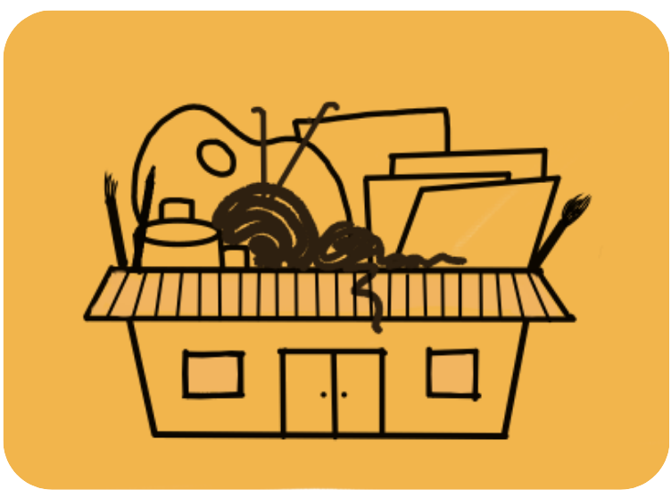

Our mission is to provide free arts and crafts supplies to aspiring artists around the community to foster creativity and artistic growth!
We do this by collecting old or unused art supplies, restoring the supplies to working condition, and repackaging and redistributing these supplies to all people around the community!

Everyone can help by donating their art and crafts supplies they no longer use or are too damaged to use! We will do our best to give all supplies a second chance in the hands of another aspiring artist!
| - paint tubes | - paint bottles |
|---|---|
| - containers | - scraps of paper |
| - brushes | - colored pencils |
| - pencils | - pens |
| - markers | - scissors |
| - crayons | - yarn |
| - canvases | - and more! |